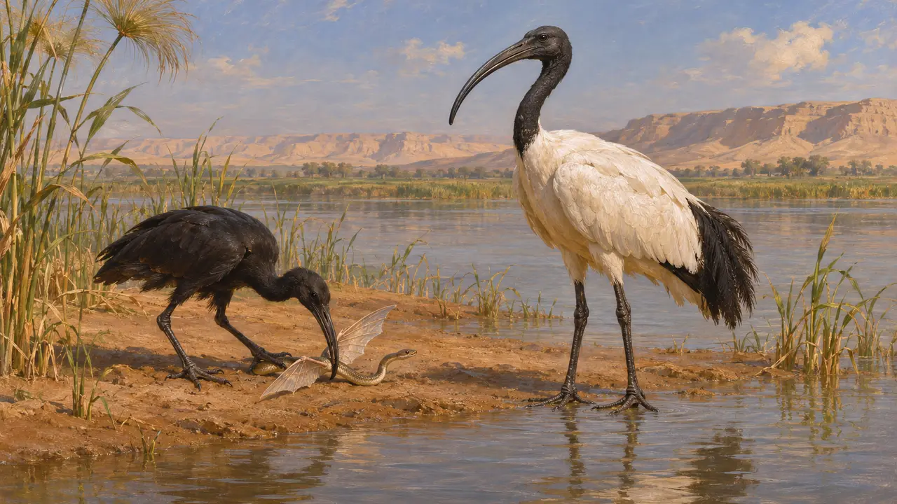
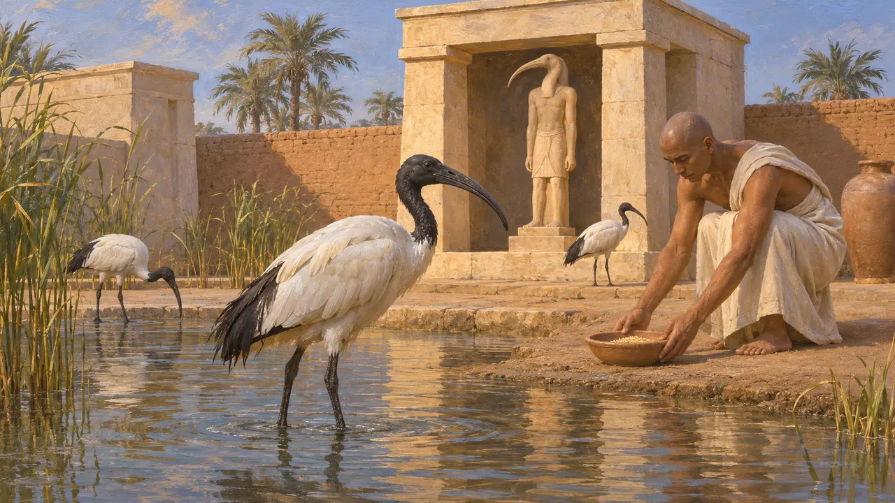
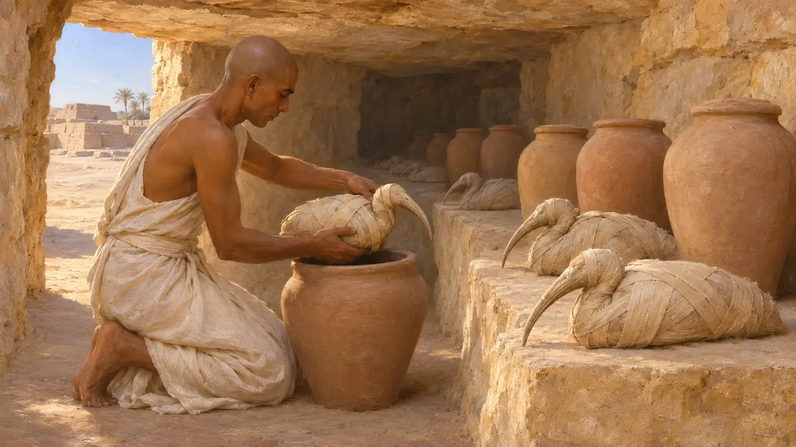
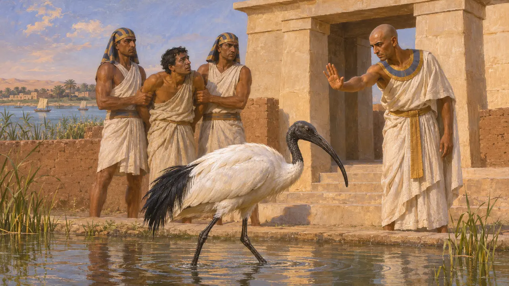
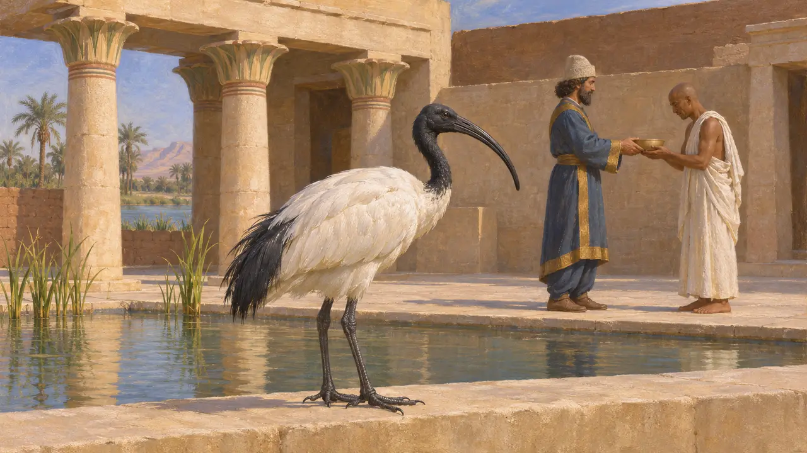

Энциклопедия › Животный мир и погода

Священный ибис
Болотная птица долины Нила, священная для Тота, Египет, 525 год до н. э. и позднее
В игре: Уровень 2: Копьеносец
Священный ибис — белая болотная птица с чёрными головой и шеей, обычная в Египте и связанная с богом Тотом. Египтяне держали её как священное животное и хоронили, а Геродот записал, что за убийство ибиса полагалось наказание. Персы правили Египтом с 525 года до н. э. в стране, где культы животных были древними и широко распространёнными.
В игре: Игра рисует ибисов как птиц в небе только на уровне «Мемфис». Это элемент пейзажа: ни одно правило их не учитывает.

Птица глазами Геродота
Античное свидетельствоГеродот описывает в Египте два вида ибисов. Один целиком чёрный и сражается с крылатыми змеями. У другого белое тело, а голова, шея, концы крыльев и хвост чёрные, ноги голые. Птицу, сражающуюся со змеями, он связывает с рассказом о крылатых змеях, прилетающих из Аравии.
Herodotus 2.75-76

Ибис и Тот
Свидетельства эпохиВ египетской религии ибис был воплощением Тота, бога письма и счёта, которого изображали также в виде павиана или человека с головой ибиса. Храмовые и культовые свидетельства показывают, что ибисов держали как священных животных и приносили в дар богу.
D. Kessler, Die heiligen Tiere und der König, 1989

Мумифицированные ибисы в Саккаре
Свидетельства эпохиРаскопки некрополя Саккара близ Мемфиса обнаружили огромное число мумифицированных ибисов, погребённых в галереях. Большая часть крупных скоплений относится к позднему I тысячелетию до н. э., так что по своему объёму они позже персидского периода. Они свидетельствуют об обычае, который складывался веками и не был установлен в 525 году до н. э.
D. Kessler, Die heiligen Tiere und der König, 1989

Защита по египетскому обычаю
Античное свидетельствоГеродот говорит, что в Египте всякого, кто убил ибиса или ястреба, даже случайно, предавали смерти. Это сообщение греческого путешественника, и оно может преувеличивать строгость закона. Оно, однако, согласуется с почитанием священных животных, о котором он пишет и в других местах.
Herodotus 2.65

Персидские цари и египетские культы
СпорныйГеродот говорит, что Камбис насмехался над египетскими обычаями и ударил кинжалом быка Аписа. Египетские источники того времени, в том числе стелы Аписа и статуя Уджагорресента, показывают, что персидские правители поддерживали некоторые храмы и культы. Историки до сих пор спорят, насколько можно доверять враждебному образу Камбиса у Геродота.
Herodotus 3.27-29; P. Briant, From Cyrus to Alexander, 2002
Источники
- Herodotus 2.65
- Herodotus 2.75-76
- Herodotus 3.27-29
- P. Briant, From Cyrus to Alexander, 2002
- D. Kessler, Die heiligen Tiere und der König, 1989